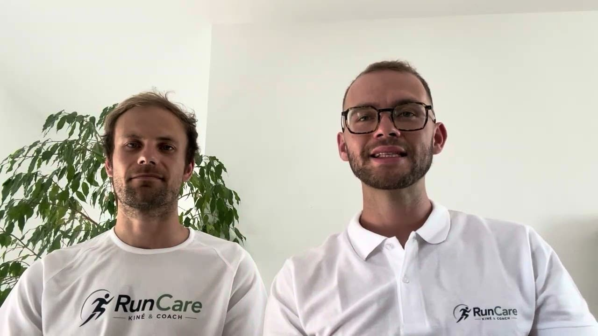
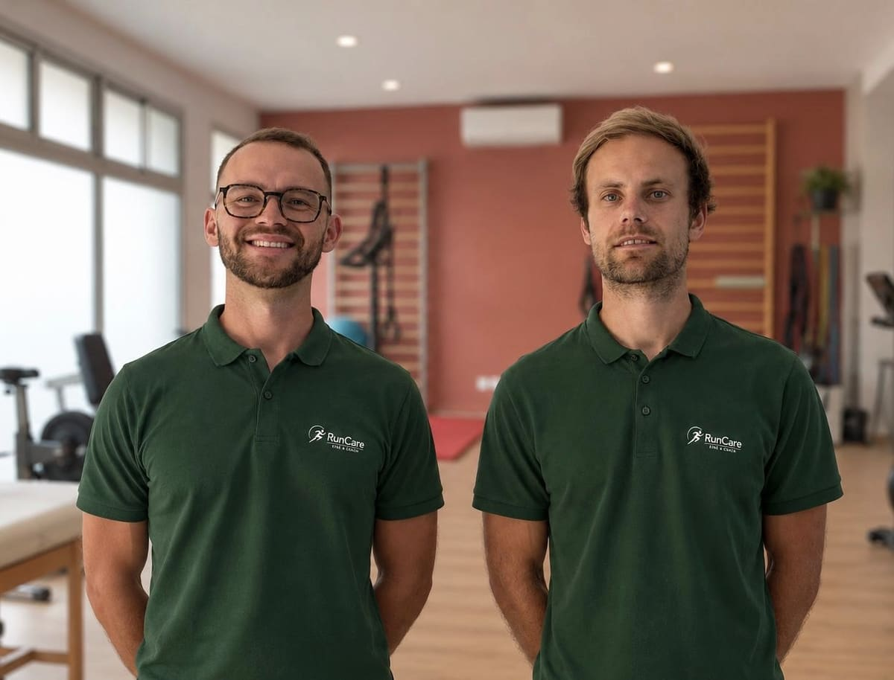

Bilan Coaching RunCare · Bordeaux
Tu cours régulièrement, tu veux progresser… mais les douleurs ou les blessures freinent ta progression ?
Tout coaching commence par un bilan, au cabinet à Bordeaux, pour établir une vision claire de ta situation.

Vidéo YouTube actuelle, intégrée iciTon parcours
Tu as peut-être déjà essayé :
- De te reposer en cas de douleur
- Un plan d'entraînement standardisé (coach, IA, internet)
- Du renforcement musculaire non spécifique
- Des étirements
- Des séances de rééducation sans résultats
- De changer ta foulée ou tes chaussures
Le constat
Pourquoi ça n'a pas marché ?
Car ces éléments pris séparément ne permettent pas :
- de prendre du recul
- de comprendre le problème dans sa globalité
- de définir les bonnes priorités
C'est précisément là que notre Bilan Coaching RunCare prend tout son sens.
Qu'est-ce que ce bilan ?
Trois étapes, une seule consultation.
Une analyse de ton profil (peut être réalisée en visio)
- Questionnaire pré-bilan et tests musculaires à distance
- Analyse de ta foulée en présentiel grâce aux capteurs Stryd
- Bilan dynamométrique en présentiel pour compléter les tests musculaires
Établir ton diagnostic
Nous croisons l'ensemble de ces informations afin d'identifier les facteurs qui limitent réellement ta progression et d'expliquer pourquoi certaines douleurs ou difficultés persistent.
- Lors de la consultation, nous définissons les actions prioritaires à mettre en place et nous répondons à tes questions.
- Après la consultation, nous te présentons nos conclusions à travers un PDF récapitulatif.
Coaching
Nous mettons en lien les conclusions du bilan avec tes objectifs pour te proposer l'accompagnement le plus adapté à ta situation.
Pour qui ?
Ce Bilan Coaching est fait pour toi si :
- Tu souhaites reprendre confiance dans ton entraînement plutôt que courir avec la peur de te blesser.
- Tu veux comprendre pourquoi tu te blesses et agir sur les causes plutôt que traiter uniquement les conséquences.
- Tu recherches un accompagnement individualisé, fondé sur les données scientifiques et l'expertise de professionnels de santé.
Une seule consultation pour objectiver et prioriser ce qui aura le plus d'efficience dans ta progression.
Tarif du Bilan Coaching RunCare
90€
Sans engagement, sans abonnement.
Tu peux appliquer les recommandations en autonomie ou, si tu le souhaites, choisir de te faire accompagner par la suite.
Après la consultation
Chez RunCare, on objective tes déficits.
Tes résultats et tes priorités de travail te sont remis dans un PDF récapitulatif.
page 1
(image actuelle à reprendre)
page 2
(image actuelle à reprendre)
Ils ont fait le bilan
Ce que disent les coureurs.
« Emplacement pour un retour de coureur : deux ou trois phrases, concrètes, sur ce que le bilan a changé. »Prénom, distance ou objectif
« Emplacement pour un deuxième retour. À collecter auprès des coureurs déjà passés par le bilan. »Prénom, distance ou objectif
« Emplacement pour un troisième retour. Un avis Google peut être repris mot pour mot. »Prénom, distance ou objectif
Notre approche
Pourquoi notre approche est différente ?
Chez RunCare, nous avons une double casquette :
- 1L'expertise du kinésithérapeute pour comprendre ton corps.
- 2Celle du coach pour construire ta progression.
Le Bilan Coaching RunCare combine ces deux approches afin de définir une stratégie d'entraînement adaptée à ton profil et à tes objectifs.
C'est facile de progresser. C'est facile de ne pas se blesser. Progresser sans se blesser, c'est là que se trouve notre expertise.
Questions fréquentes
Avant de réserver
Est-ce que je peux faire le bilan si je suis actuellement blessé ?+
Oui. Nous cherchons d'abord à comprendre pourquoi ta blessure est apparue et ce qui t'empêche de reprendre durablement. Si ta situation nécessite une prise en charge médicale spécifique, nous t'orienterons vers un professionnel de santé adapté.
Est-ce que vous analysez ma foulée ?+
Oui, mais pas systématiquement. La littérature scientifique ne permet pas de considérer qu'il existe une « foulée parfaite » permettant à elle seule de prévenir ou guérir les blessures.
Que se passe-t-il après le bilan ?+
À l'issue du bilan, nous t'expliquons clairement les principaux éléments identifiés et les priorités de travail, que tu pourras appliquer seul ou accompagné si tu choisis un coaching.
Quel est le prix du coaching ?+
Selon ta situation, nous avons plusieurs formules de coaching pour répondre à tes besoins.
Quel est le prix du bilan ?+
90 €, aucun abonnement, aucun engagement.
On fait le point ?
Appelle ton kiné-coach pour faire le point sur ta pratique.

À très vite !
Romain et Lélio
Kinésithérapeutes spécialisés en course à pied, fondateurs de RunCare
RunCare : actes de prévention et d'accompagnement du coureur. Les prestations de coaching sont réalisées par des kinésithérapeutes dans le cadre d'actes hors nomenclature et ne sont pas remboursées par l'Assurance Maladie.